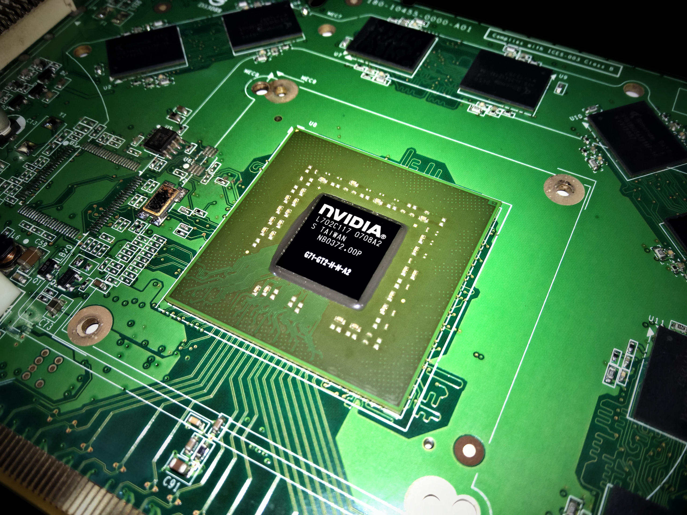
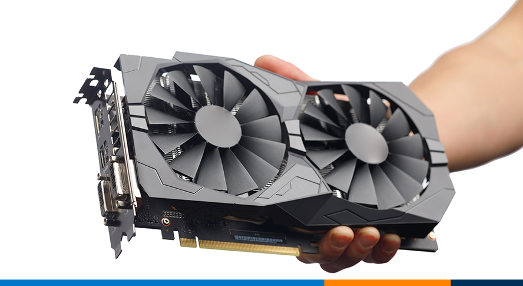
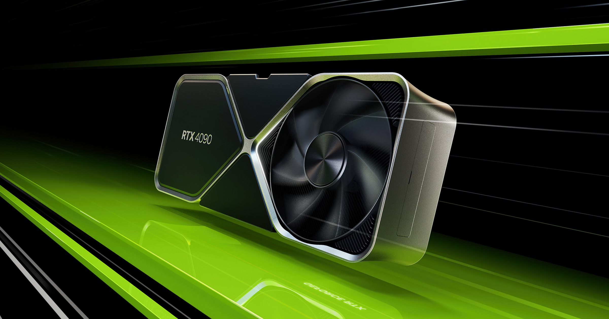

What is a GPU?

A GPU, or Graphics Processing Unit, is a specialized processor designed to accelerate the rendering of images, video, and animations. It is highly efficient at handling complex calculations needed for graphics and visual processing.
Modern GPUs are used for more than just graphics. They are also vital for parallel processing in AI, scientific simulations, and cryptocurrency mining.
Popular brands that produce GPUs include NVIDIA and AMD, each offering various models for different user needs, from gaming to professional workstations.
GPU Uses

Here are some common uses for GPUs:
- Gaming: GPUs are essential for rendering high-quality graphics in modern video games.
- Video Editing: GPUs help in rendering videos faster and smoother in post-production workflows.
- AI and Machine Learning: GPUs are used to accelerate deep learning tasks by performing multiple calculations simultaneously.
- Cryptocurrency Mining: GPUs are often used to solve complex algorithms and earn cryptocurrency.
Choosing the right GPU depends on what you're using it for. Gamers might opt for NVIDIA’s GeForce series, while professionals could go for the Quadro or AMD Radeon Pro series.
Featured GPU

NVIDIA GeForce RTX 3080
Key Specifications:
- 10GB GDDR6X Memory
- 1.71 GHz Boost Clock
- 8704 CUDA Cores
- Ray Tracing and DLSS Support
Performance Overview:
The NVIDIA GeForce RTX 3080 offers outstanding performance for both gaming and creative workloads. Its real-time ray tracing capability creates lifelike lighting, shadows, and reflections, making it a favorite among gamers and professionals alike.